The SHC_OnStepX hand controller as it will be built: the printed enclosure (the STLs exported from enclosure_hc_tft.scad), the 3.5″ MSP3520 display, the HC-TFT board, the KY-023 joystick, the ⏻ button, the GPS and the 18650. The screen runs the real firmware, compiled to WebAssembly, talking LX200 to a simulated OnStepX main (10.29c): touch the glass, push the joystick, press ⏻. Then the guide, the wiring and everything needed to order and build it.
Glass: tap, drag, wheel to scroll · Joystick head: drag (short click = its button) · ⏻: click · Elsewhere: rotate, wheel zoom, right-drag pan
Each card has a button that opens the matching screen on the 3D hand controller above.
SERIAL_IP_MODE WIFI_ACCESS_POINT: network OnStep, password password, address 192.168.0.1, port 9999. The hand controller joins it by itself.WIFI_VIA_ROUTER in the hand controller, SERIAL_IP_MODE BOTH and a fixed STA_IP_ADDR on OnStepX.:Rn# then :Mn#…; released: :Qn#. Ten speeds = OnStepX's :R0 … :R9 (×¼ to GOTO).:Q# :Td#). STOP held 1 s = emergency stop: axes, tracking, focuser and derotator all ramp down. There is no hardware emergency-stop button.:Te# / :Td#.:Sr :Sd :MS); OnStepX does the slew, ramps and limits.:Sz :Sa :MA.:A1 … :A9, then :A+ for each star.:AW.:F…, derotator :r… (moves by an absolute :rS), dew heaters on OnStepX's auxiliary outputs (:GXY/:GXX/:SXX).| Ref. | Pins (silkscreen) | Goes to | ESP32 | Watch out |
|---|---|---|---|---|
| J1 | USB-C, 5 V | Charger (top of the enclosure) | VBUS → GPIO39 (÷2) | Charges at 1 A (TP4056); flashing goes through the DevKit's own USB |
| J2 | 1 BAT+ · 2 BAT− | 18650 holder | VBAT → GPIO36 (÷2) | 3.7 V (1S) only; check polarity with a multimeter; BAT− is not ground |
| J8 | 1 LED+ · 2 LED− | 1 W red LED | GPIO12 (Q8) | 170 mA constant current: no resistor |
| J3 | 1 PWR · 2 GND · 3 LED+ · 4 GND | ⏻ ABILKEEN 16 mm: NO, C, ring +, ring − | GPIO34 sense, 25 hold, 26 ring | Rev. B board: J3-5 / J3-6 stay empty, no jumper |
| J7 | 1 3V3 · 2 TX · 3 GND | NEO-M8N GPS | GPIO17 (UART2 RX) | Never 5 V; its regulator must give ≥ 2.7 V from 3.3 V |
| J9 | GND · 3V3 · VRX · VRY · SW | KY-023 | 33, 35 (ADC1), 13 | 3.3 V, never 5 V |
| J4 | VCC … T_IRQ (14) | MSP3520, plugged in | SPI 18/23/19, CS 5, DC 21, RST 4, T_CS 22, IRQ 14, BL 16 | Bridge J1 of the module; pin 9 SDO not connected (rev. B: bend it out) |
| U1 | GND row 1 × 19, 3V3 row 1 × 17 | ESP32 DevKit 38 pins | — | Row spacing: 22.86 mm → "int. NodeMCU", 25.4 mm → "ext. DevKitC" |
Renders of the real fabrication files (KiCad 10, HC-TFT rev. C) and of the STLs to print (OpenSCAD). Click an image for full size.
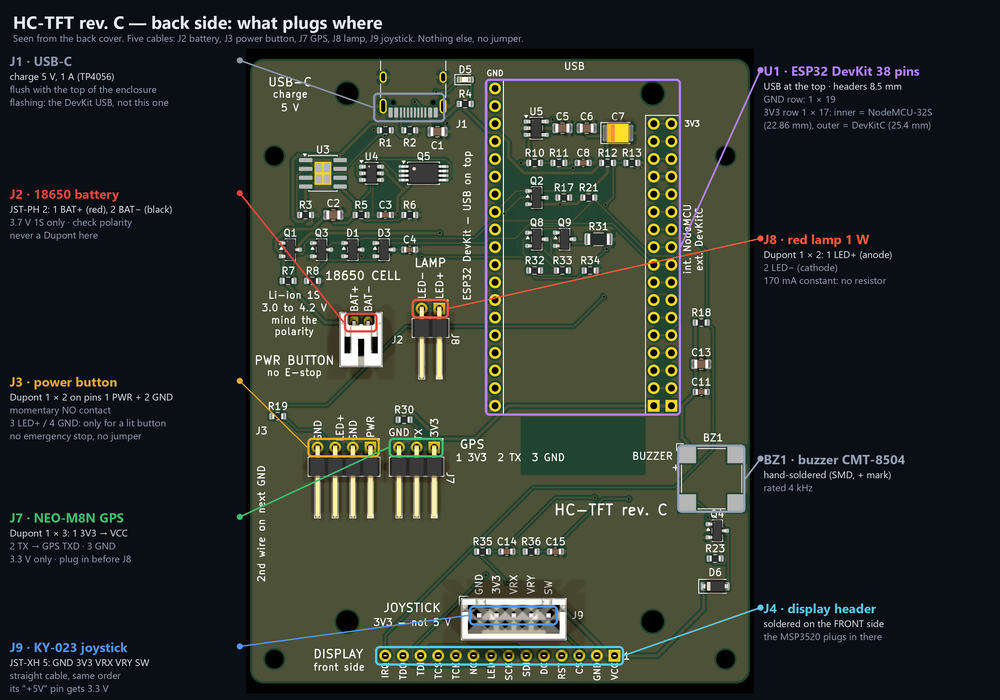
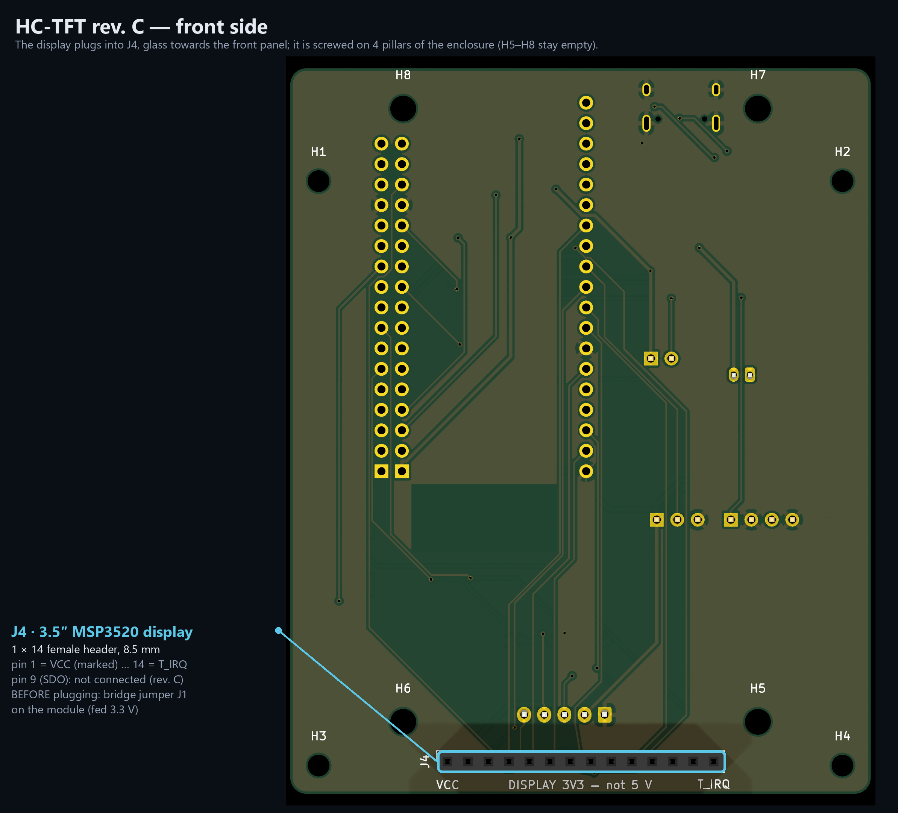
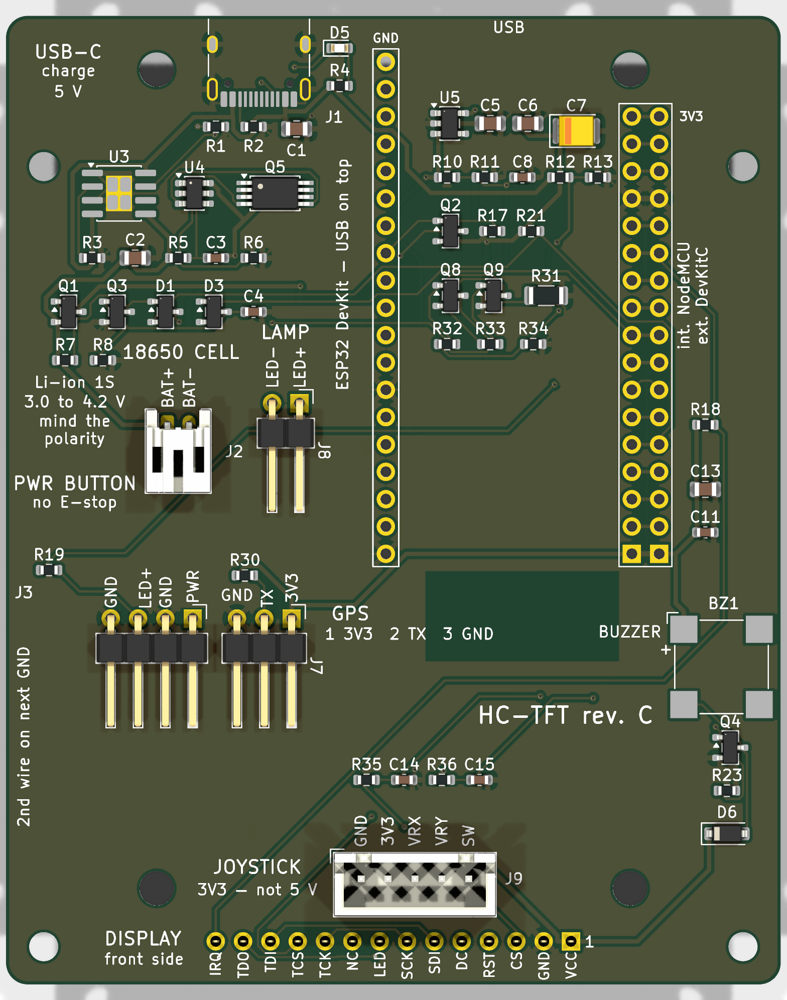
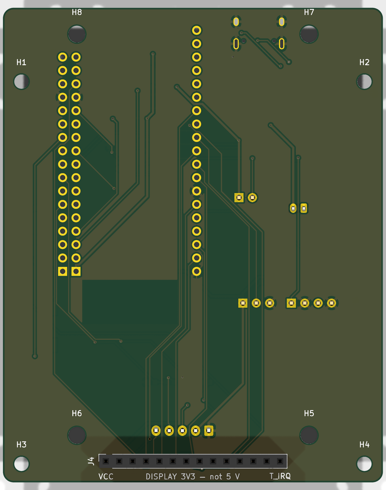
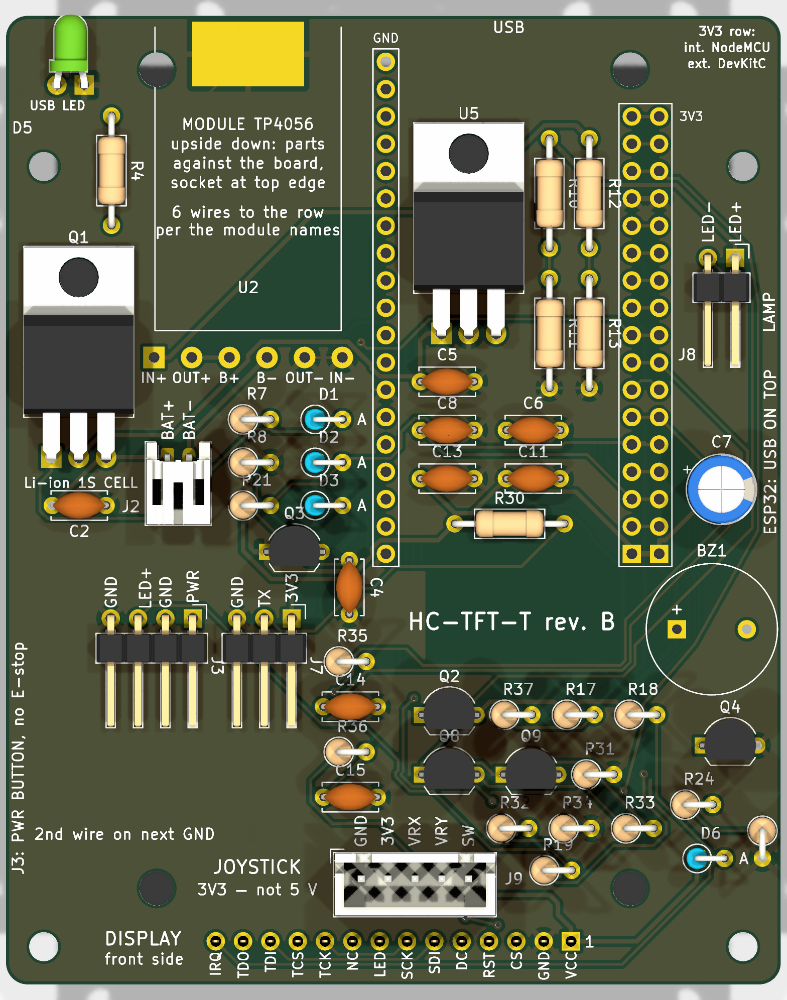
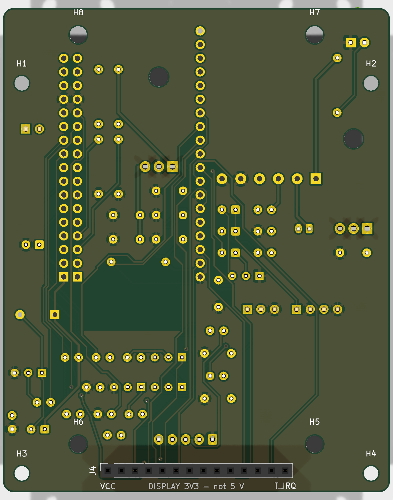
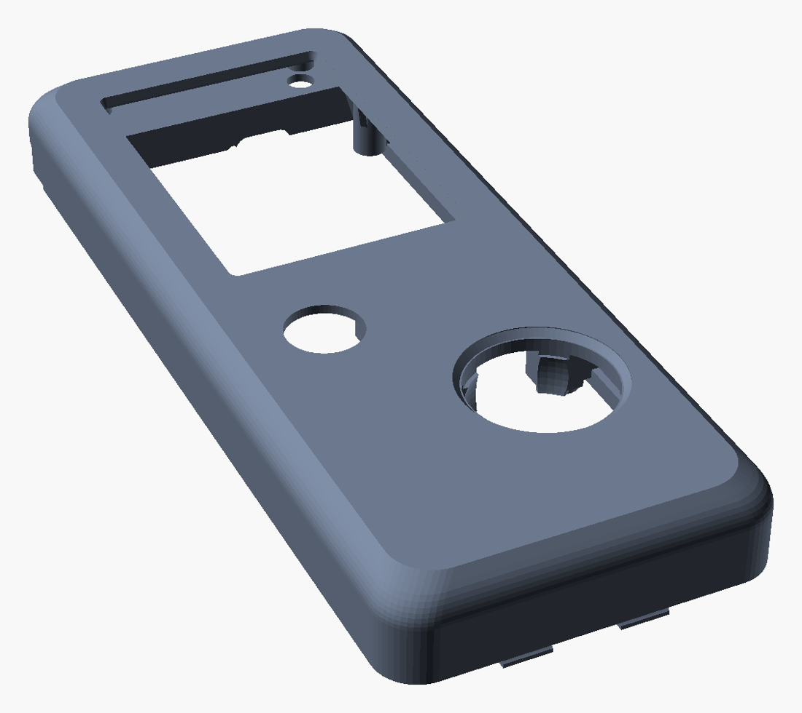
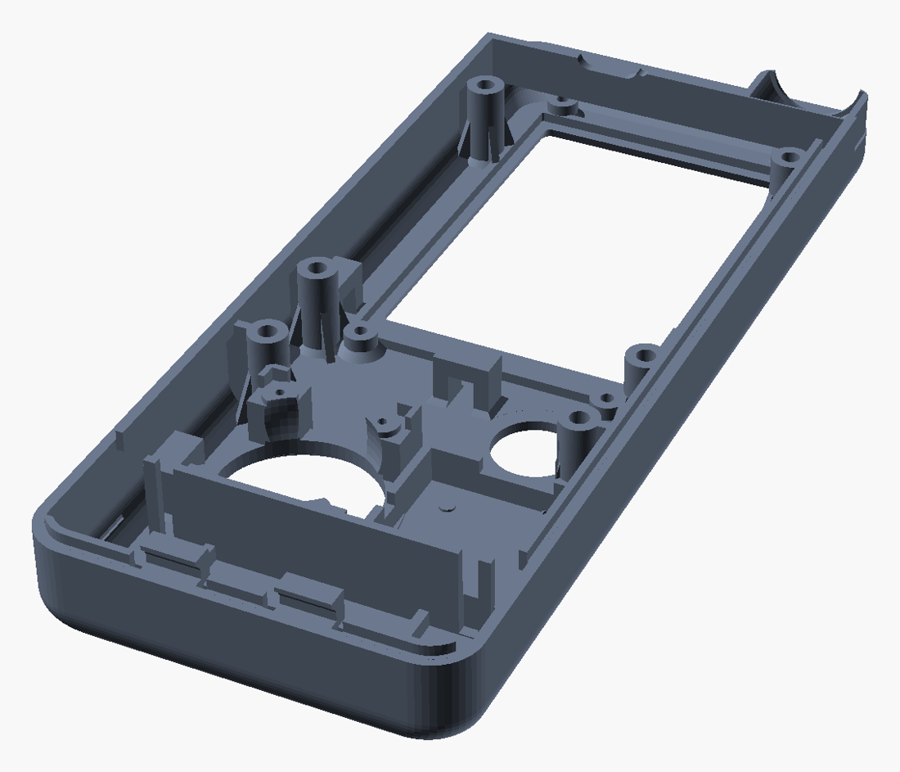
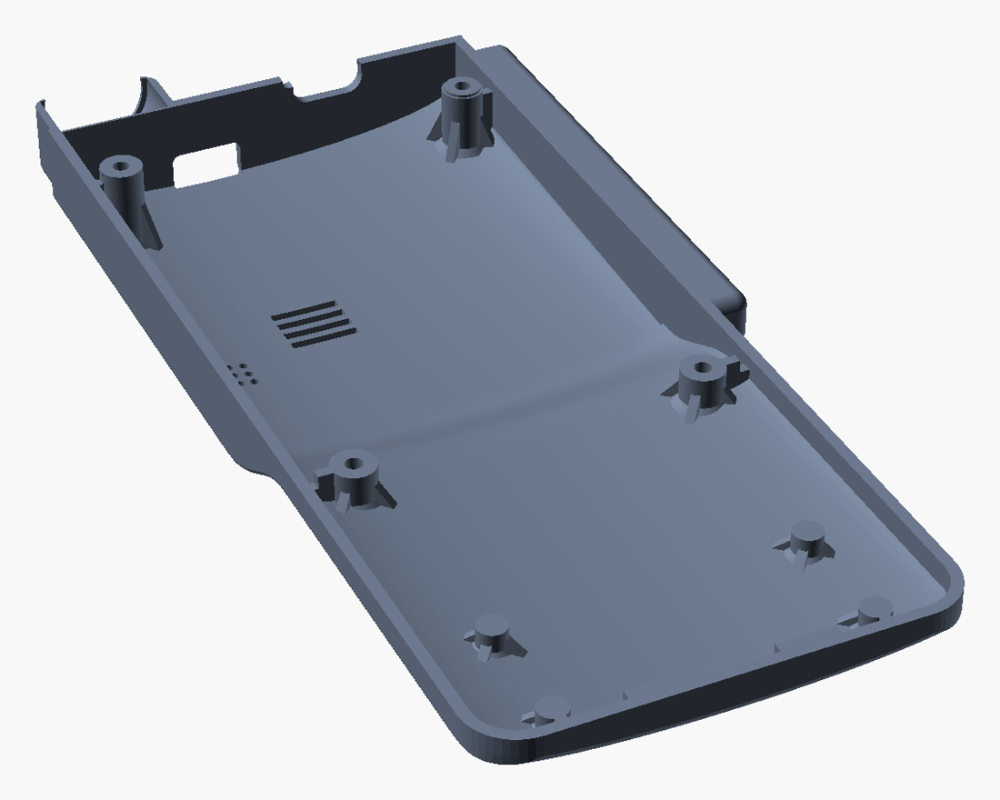
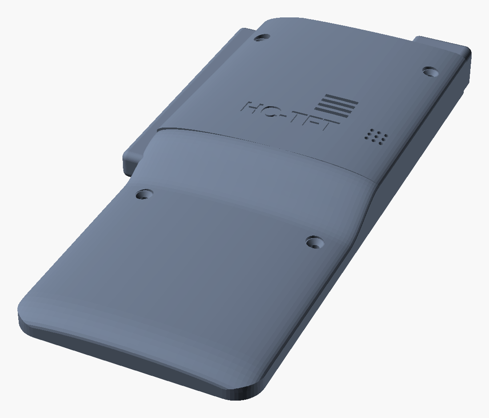
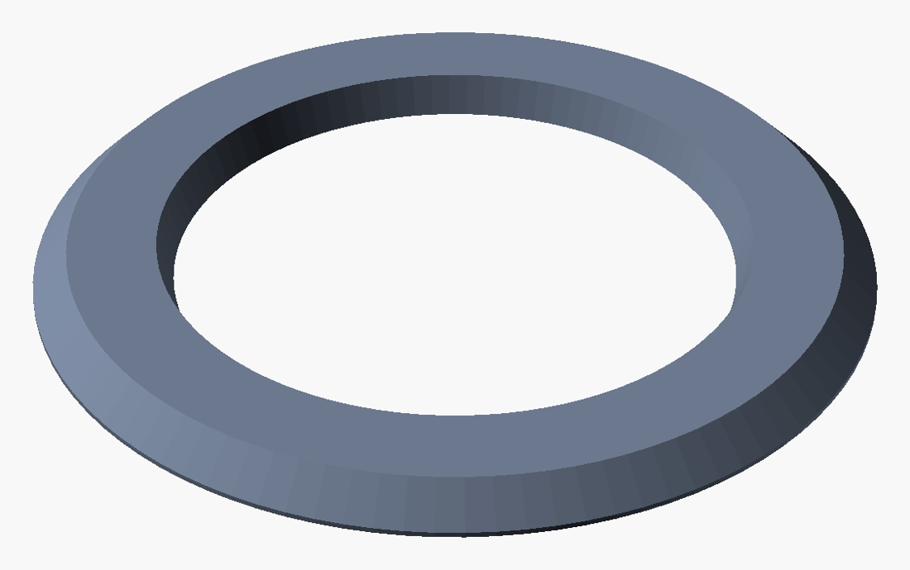
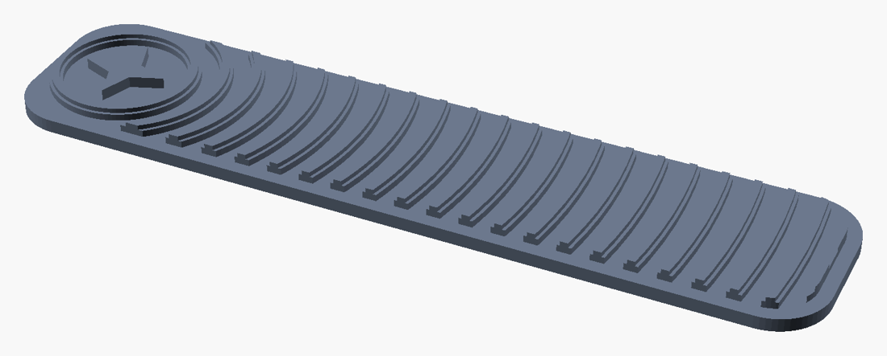
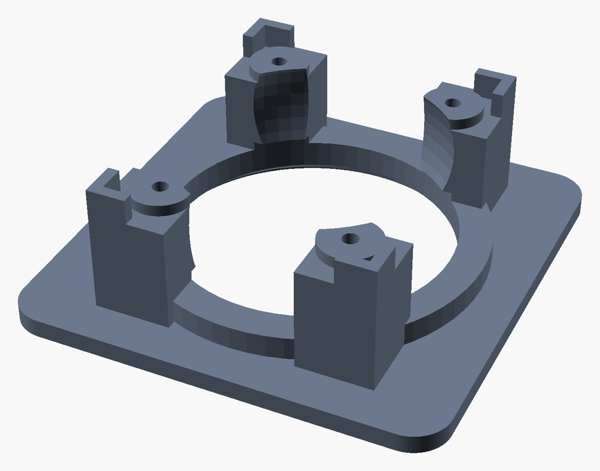
Through-hole board: front and back cover in downloads/stl/tht/ (front.stl, back_cover.stl); the other parts are the same.
SMD board HC-TFT rev. C, 72 × 90 mm, 2 layers, 1.6 mm, matte black mask, white silkscreen, ENIG; assembly Bottom side only, 51 parts.
HC-TFT_gerbers.zip (upload as is)HC-TFT_JLCPCB_BOM.csv (Comment, Designator, Footprint, LCSC Part #)HC-TFT_JLCPCB_CPL.csv (Designator, Mid X, Mid Y, Layer, Rotation)HC-TFT_hand_solder.csv).Solder-it-yourself alternative: HC-TFT-T rev. B, downloads/pcb_tht_revB/ (bare board: Gerber only; JLCPCB BOM/CPL if you want it soldered); its buzzer needs BEEP_FREQUENCY_HZ 2400.
front.stl — black PETG or ASA, front panel on the bed, supports only under the visor ceiling.back_cover.stl — joint plane on the bed.joystick_cover.stl (PETG), 2 × foot_pad.stl (TPU 95A), joystick_template.stl to try the joystick first.stl_3.5in_tft/tht/ front and back cover.joy_*, gps_board in the .scad).| Part | Qty | Where | Price | Requirement |
|---|---|---|---|---|
| Modules | ||||
| 3.5″ SPI display lcdwiki MSP3520 (ILI9488 + XPT2046, resistive) — lcdwiki reference | 1 | Elecrow (touch option) / AliExpress | ≈ $9.50 | ILI9488 only (no ST7796, no MSP3521, no capacitive); bridge J1 |
| ESP32 DevKit 38 pins, WROOM-32 | 1 | BerryBase (NodeMCU-32S) | 6.80 € | no WROVER / S3 / C3 / 30 pins; measure the row spacing |
| u-blox NEO-M8N "GPS module with compass", out of its round case | 1 | AliExpress | — | board 32 × 32 mm, no holes needed, 25 × 25 patch 3–5 mm thick, ≤ 9 mm overall; NMEA output; 3.3 V-capable regulator (not AMS1117) |
| Joystick KY-023 / HW-504, 34 × 26 × 32 mm, 3.3–5 V | 1 | funduinoshop / AliExpress | 1.29 € | drawn for board 26.7 × 33.7, holes Ø 2.5 at 20 × 26.13: print the template first |
| Push button ABILKEEN 16 mm ultra-slim, momentary 1NO, red LED ring | 1 | AliExpress 1005013279797542 | ≈ 2.80 € | options: momentary, ring red, DC 3-6V (not 12-24 V); nut 21.7 across corners fits the Ø 23 seat |
| Power and lamp | ||||
| 18650 cell, 3,000–3,500 mAh (bare is fine: the board protects it) | 1 | batterie-boutique.fr / Nkon | 10–20 € | 3.7 V 1S only; never a fake "9,900 mAh" |
| 1 × 18650 holder with wires, 74.5 mm (SparkFun PRT-12899) | 1 | Opencircuit | 4.75 € | a 76 mm holder probably does not fit |
| 1 W deep red LED on 20 mm star, wires pre-soldered + 20 mm 30° optic with holder | 1 | AliExpress 1005006076131693 (lot of 5) + eBay/Amazon | ≈ 2.20 € + a few € | options 1W, deep red (rouge profond); not 3 W, not white/blue/UV |
| To solder on the board | ||||
| Female headers 8.5 mm (1 × 19, 1 × 17, 1 × 14), right-angle male header 1 × 40, JST S2B-PH-K, JST B5B-XH-A | — | Reichelt | ≈ 2.40 € | J4 at 8.5 mm: 11.04 mm display-to-board |
| Buzzer CUI / Same Sky CMT-8504-100-SMT-TR | 1 | DigiKey / LCSC | 1.58 € | rated 4 kHz (firmware default) |
| Fasteners, wiring, printing | ||||
| Heat-set inserts M2.5 × 3.5; M2.5 × 25 / × 16 countersunk; M2.5 × 6; 4 × M3 × 6 self-tapping (display); M2 × 8 and ST2.6 × 4 self-tapping; 2 cable ties | — | dhm, Marleva, AliExpress, Gotronic | ≈ 10 € | no standoffs for the 3.5″ |
| 26 AWG silicone wire, JST-PH and JST-XH housings + contacts, Dupont housings 1 × 2 / 1 × 3 / 1 × 4 / 1 × 5 + contacts | — | Gotronic, AliExpress | ≈ 20 € | no jumper to buy |
| Black PETG 1 kg, TPU 95A, hot glue, cyanoacrylate, POM-tip stylus | — | 3DJake, Gotronic, AliExpress | ≈ 35 € | — |
Parts ≈ 145 € (of which 31 € of filament), ≈ 185–215 € with shipping. Full list with links and survey dates: SHOPPING_LIST.md (SMD board) and SHOPPING_LIST_THT.md (through-hole board).
| Item | Result | How |
|---|---|---|
| Firmware | ||
| Build ESP32, 3.5″ and 2.8″ | OK | PlatformIO, 0 warnings; flash 75.3 % of 3 MB, RAM 31.4 % |
| LX200 protocol against the real OnStepX source (main, 10.29c, af1d26b) | 4 bugs fixed | :Sz/:Sa rejected (apostrophe before the seconds) → ':'; :rr never parsed by OnStepX → absolute :rS; :MN# result read inverted; arrow speed cache bypassed by :RA/:RE and :Rn from settings |
| Robustness | fixed | late reply after a timeout → clean reconnection; init errors 13–15 no longer fail every GOTO; a GOTO never seen running is reported failed; intervalometer state; GPS automatic baud rate; buzzer at its rated 4 kHz |
| Emergency stop | removed from hardware | no input, no jumper; STOP held 1 s on the interface (axes, tracking, focuser, derotator) |
| Mount bench against the simulated OnStepX (TCP) | 0 failure | tests/check_onstepx.py, new alt-az GOTO test included |
| Interface bench: every gesture → the right LX200 | 0 failure | tests/check_interface_osx.py |
| Every screen and every touch zone, 3.5″ | 30 screens, 467 zones | tests/preview_screens.py --35 |
| Boards | ||
| HC-TFT rev. C (SMD) | DRC 0 / 0 / 0 | 0 errors, 0 unconnected, 0 schematic mismatches; check_design.py 232 / 232; JLCPCB CPL 59 parts, 0 gaps |
| HC-TFT-T rev. B (through-hole) | DRC 0 / 0 / 0 | check_design.py 175 / 175; CPL 52 parts, 0 gaps |
| Display and parts (datasheets read) | ||
| MSP3520: ILI9488 + XPT2046, 14-pin order = J4, 56.34 × 98 mm, holes 49.5 × 92 | compatible | lcdwiki page, schematic and drawing; init sequence identical to TFT_eSPI ILI9488_Init.h, 18-bit pixels (the only SPI format of the ILI9488) |
| MSP3520 at 3.3 V | bridge J1 | schematic note: "VCC 3.3 V: J1 shorted" |
| ILI9488 SDO on the shared MISO | fixed in rev. C | TFT_eSPI issue 1431: "display SDO must be left disconnected" |
| Touch XPT2046 at 2.5 MHz, display at 27 MHz | OK | separate CS, clock switched per transaction |
| DevKit row labels | fixed in rev. C | DevKitC V4 = 25.4 mm, NodeMCU-32S / clones = 22.86 mm |
| Battery holder 76 mm (BerryBase) | replaced | enclosure drawn for 74.5 mm (SparkFun PRT-12899) |
| Enclosure collision test (display, board, battery, joystick at its stops) | no contact (SMD and THT) | OpenSCAD, part="check", test="full", SMD and THT boards |
| On real hardware | ||
| The hand controller itself: HC-TFT board, ESP32, TFT touch display (2.8″ unit), joystick, 18650 power | tested | the author's unit, built and used at the telescope |
| File | What it is |
|---|---|
| SMD board HC-TFT rev. C — JLCPCB, assembly Bottom side | |
| HC-TFT_gerbers.zip | Gerber + drill files, 2 layers, 72 × 90 mm |
| HC-TFT_JLCPCB_BOM.csv | JLCPCB BOM, 25 lines with LCSC codes (51 parts placed) |
| HC-TFT_JLCPCB_CPL.csv | JLCPCB pick-and-place, Bottom layer |
| HC-TFT_hand_solder.csv | The 8 parts to solder yourself |
| Through-hole board HC-TFT-T rev. B | |
| HC-TFT-T_gerbers.zip | Gerber + drill files (order bare, no assembly) |
| BOM · CPL · hand solder | Only for JLCPCB "THT assembly" (optional) |
| Enclosure (3.5″ MSP3520) | |
| downloads/stl/ | front, back_cover, joystick_cover, foot_pad, joystick_template; tht/ for the through-hole board |
| Shopping | |
| SHOPPING_LIST.md · SHOPPING_LIST_THT.md | Every part, with requirements, links and prices surveyed |
The firmware on this page is built with a neutral site (Paris) and the factory OnStepX Wi-Fi settings.